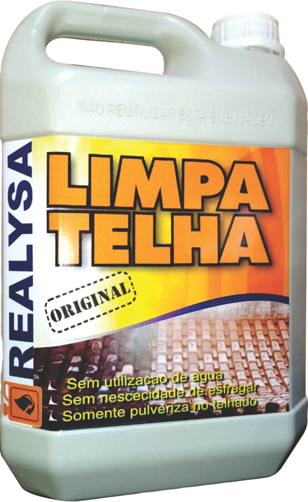

O fim da sujeira começa agora!
20 anos no mercado e centenas de clientes satisfeitos no Brasil! O Limpa Telha Realysa oferece limpeza profunda e prática de telhados e outras superfícies, eliminando fungos, sujeiras e restaurando a aparência original.
Quero limpar meu telhado!
